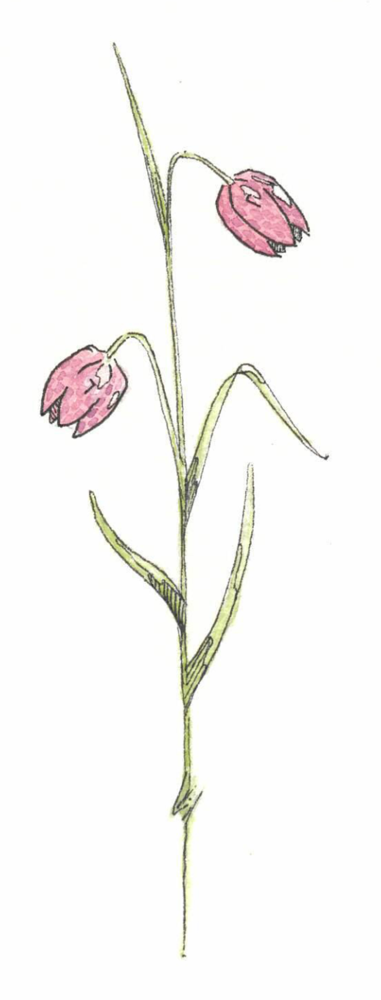
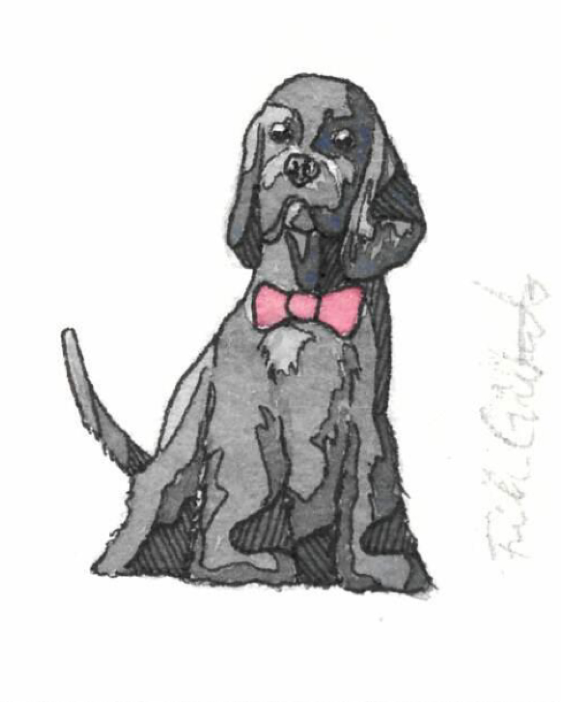

Välkommen till vårt Bröllop
31 augusti, 2024 - Uppsala Vigsel
Vår vigsel kommer att äga rum i Gamla Uppsala Kyrka klockan
14:30.
Adress:
Disavägen 8, Uppsala.
Middag och Fest
Dagen fortsätter med tre-rätters middag och fest på restaurang
Sven Dufva. Vi färdas hit tillsammans med buss efter vigseln. Ca
kl 15:30.
Adress:
Dag Hammarskjölds Väg 40, Uppsala
Vill ni hålla tal eller spexa?
Klart ni vill! Kontakta Julia Thorberg eller Filip Brink, våra
otroliga toastmasters för kvällen.
toast@sofiaochmaxbrollop.se
Frågor och Svar
-
Jag hittar inte all information på hemsidan? Hemsidan kommer att uppdateras löpande.
-
Vad ska jag ha på mig? Klädkoden är Mörk kostym. Man kan läsa mer om vad det innebär här.
-
Hur gör vi med presenterna? Det viktigaste för oss är att ni kommer! Om ni vill ge en gåva så är det väldigt uppsakttat med en swish till bröllopsresan.
-
Är barn välkomna? Vi älskar era ungar. Men denna dag väljer vi att fira i enbart vuxet sällskap.
-
När måste jag OSA? Vi ser gärna att du osar senast 31 maj. Antingen gör du det här på hemsidan eller så mailar du oss på info@sofiaochmaxbrollop.se OSA
-
Hur tar jag mig lättast runt i Uppsala? För alla er som inte känner er helt hemma i Uppsala så så har vi skapat en informationssida. "Resa & Bo". Här har vi samlat information om boende och resor inom Uppsala. Resa & Bo
-
Men hallå! Hur långt är det kvar? Jag orkar inte vänta en sekund till! Lugn bara lugn. Här kan du se hur lång tid det är kvar
-
Hur gör jag om jag har önskemål angående bordsplaceringen? Då skickar du in dem via ett formulär. Till formuläret
